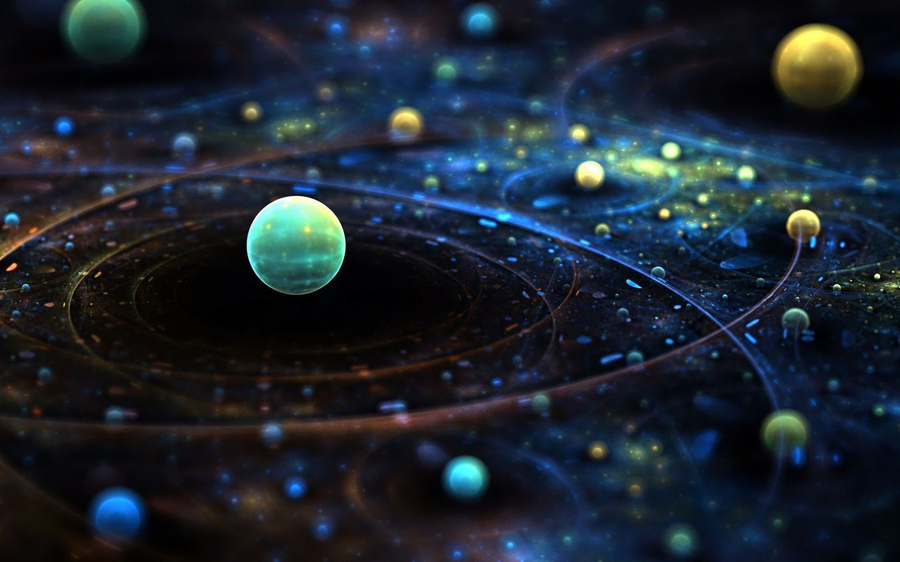

Dart Programming Language
Dart is a general-purpose programming language originally developed by Google and later approved as a standard by Ecma (ECMA-408). It is used to build web, server, and mobile applications. Dart is an object-oriented, class defined language using a C-style syntax that transcompiles optionally into JavaScript. It supports interfaces, mixins, abstract classes, reified generics, static typing, and a sound type system.
From Wikipedia
Artificial Intelligence
Artificial intelligence (AI), sometimes called machine intelligence, is intelligence demonstrated by machines, in contrast to the natural intelligence displayed by humans and other animals. In computer science AI research is defined as the study of "intelligent agents": any device that perceives its environment and takes actions that maximize its chance of successfully achieving its goals.
From Wikipedia

Quantum Technology
Quantum technology is a new field of physics and engineering, which transitions some of the properties of quantum mechanics, especially quantum entanglement, quantum superposition and quantum tunnelling, into practical applications such as quantum computing, quantum sensors, quantum cryptography, quantum simulation, quantum metrology and quantum imaging.
From Wikipedia